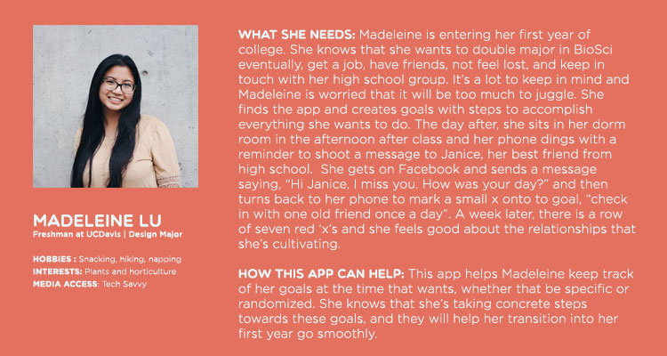
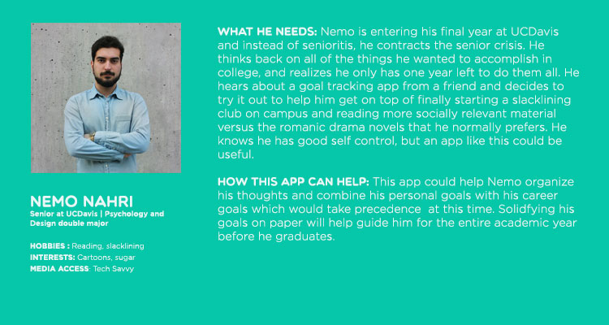

Project Summary
This project is an app that will help students identify and keep track of their goals whether they be academic or personal. They will also help distinguish which goals are immediate and which are more long term, which can go into a four year plan as this is something that will help guide undergraduate students at UC Davis through their four years and look back to see what they've accomplished step by step.
Audience Profile
The audience or the user will be undergraduate students ranging around the ages 18 to 22 year old. They have many different interests, but generally share the same generational cultural interests such as TV shows or popular books. They are connected together by the status of student and also by location and school affiliation. As millennials, they are generally tech-savvy and know how to operate new devices and technology with ease, given good UX design. With this took , they can understand themselves better and cater to their own specific needs and goals through customizable fields.
 Perception/Positioning
I'm trying to help student realize what they're capable of. There are so many times during our undergraduate years where we want to give up or we want to drop everything because it seems overwhelming. Sometimes, it just takes good organization. I'll be using a fun quirky interface in addition to smooth navigation to keep users engaged. It's not meant to drag users down, but to encourage them and keep them on track. I'll be using words and indicators of encouragement through the interface to help bouy the user along. Limitations will be the endurance and tenacity of the user himself or herself to keep himself or herself accountable.
Communication Strategy
The single most important message is: You can accomplish whatever you set out to accomplish. It's never too late.
Look and Feel
Typography will be clean and the look will be mainly minimalistic but with pops of color inidicating important forms or important notifications. Encouragement messages or congratulations messages will always be a certain color so that users will begin to associate certain colors with certain kind of messages.
Targeted Message
In the end, the tool only serves to enhance the user's performance. It's to help with organization and with morale boosting, both which are important to the growing undergraduate student!